TRAE FLOW 体验用例
> 面向评审人员，覆盖三条主线：TRAE 任务上岛、VibeCoding 组件上岛、TRAE Work Design 宠物上岛。按顺序执行即可完成此应用主线功能体验。
体验前准备
1.1 环境要求
- macOS 14.0+（带刘海 MacBook 最佳）
- 至少安装 TRAE 或 TRAE CN 之一
- 公网访问
- 未开启其他菜单栏隐藏图标相关软件（防止菜单栏优先级被抢占）
1.2 获取应用
- 下载 Releases
DMG
拖入
/Applications； - 当前 GitHub Release 构建使用 ad-hoc 签名，未经过 Apple 公证（Notarization）。首次打开时，macOS Gatekeeper 可能会拦截并提示“无法打开，因为无法验证开发者”。
- 解决方法（任选其一）：
- 1、在“系统设置” > “隐私与安全性”中，找到“已阻止使用 TRAE FLOW”提示，点击“仍要打开”。
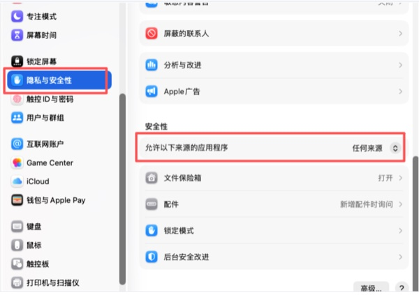
- 2、右键点击应用图标，选择“打开”。
- 3、在终端执行：
bashxattr -d com.apple.quarantine /Applications/TRAE\ FLOW.app
1.3 启用 TRAE Hooks（任务上岛前置）
- 启动应用，打开TRAE「设置 > Hooks」。
- 勾选 TRAE / TRAE CN 对应的「启用 Hook」。
- 配置自动写入
~/.trae/hooks.json或~/.trae-cn/hooks.json。 - 完全退出并重启对应 TRAE 变体使 Hook 生效。
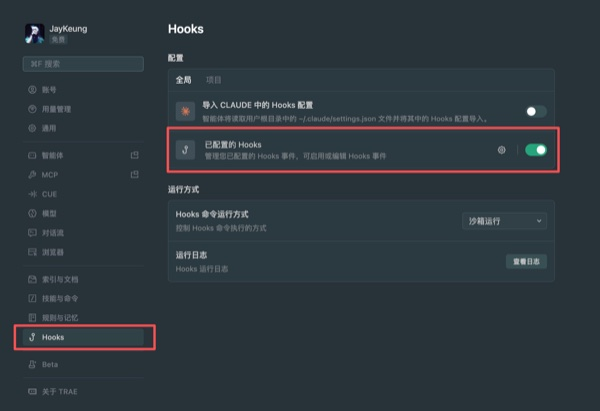
主线一：TRAE 任务上岛
> 目前仅支持 TRAE 与 TRAE CN 两个变体，鼠标悬浮或点击flow岛的右半侧显示任务列表。
TC-01 会话启动上岛
- 在已启用 Hook 的 TRAE 变体中发起 AI 会话。
- 观察 Flow 岛右侧。
预期：宠物显示为进行中状态，右侧任务计数 +1；
TC-02 完成通知与归档
- 让 TRAE 完成一次完整任务（Stop 事件）。
- 观察任务完成与列表归档。
预期：任务完成后自动展开任务列表；会话进入 .ended 后仍在右侧展开任务列表可见，直至手动归档。
TC-03 双变体并发
- 同时启用 TRAE 和 TRAE CN 的 Hook。
- 在两个变体中分别发起会话。
预期：两个变体计数独立和显示对应标签；展开态右侧分别列出待处理任务数与跳回按钮；点击各行准确跳回对应 IDE。
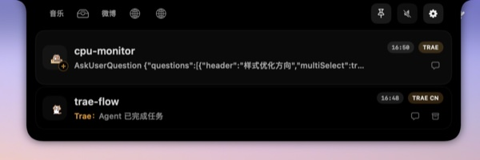
主线二：VibeCoding 组件上岛
VC-01 功能切换与排序
- 鼠标悬浮或点击flow岛的左半侧展开功能岛。
- 点击顶部切换栏不同功能图标，拖拽可调整排序。
预期：左侧主内容区跟随切换；排序持久化，重启保持。默认启用：AI 热搜、音乐、中转站、自定义功能演示。
VC-02 展开面板尺寸调整
- 鼠标移动或点击到flow岛的左半侧展开功能页面，鼠标移动到左右下角显示调整尺寸按钮。
- 先点击一次调整尺寸按钮，随后可以拖拽左下 / 右下角圆角指示器调整功能页尺寸。
预期：尺寸实时跟随；释放后持久化到对应功能，下次展开保持调整后的尺寸。
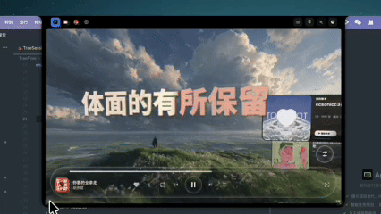
VC-02 音乐控制
- 在 Music.app / Spotify / 网易云 / QQ 音乐之一播放音乐。
- 观察紧凑态与展开态。
预期：
- 紧凑态：渲染音乐视图（18pt 圆角封面缩略图 + 截断曲目标题）；无播放时显示灰色音符图标。
- 展开态：显示 140pt 封面大图、曲目 / 艺术家 / 专辑信息、完整控制按钮（上一曲 / 播放暂停 / 下一曲），背景为封面主色调动态渐变。
- 控制操作实时生效到系统播放器。
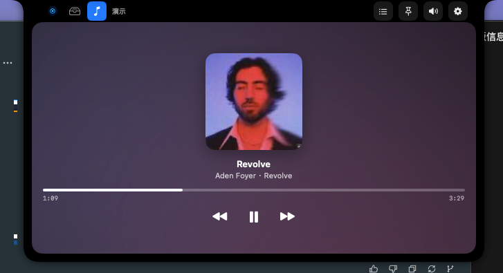
VC-04 中转站文件暂存
- 从任意地方拖拽可用文件到flow岛自动识别进入中转站。
- 右键移除单个文件 / 点击 AirDrop 分享全部 / 中转文件拖拽到其他应用
预期：拖拽文件到flow岛自动识别进入中转站，右键可移除；AirDrop 弹出系统分享面板；退出应用后自动清空。
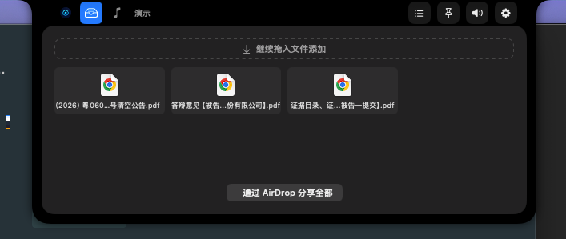
VC-05 自定义区域 JS Bridge
- 切换到「TRAE Flow 自定义功能演示」。
- 内置多种支持事件演示，便于用户快速上手制作自己想要的功能。
- 点击页面「发送提示」按钮。
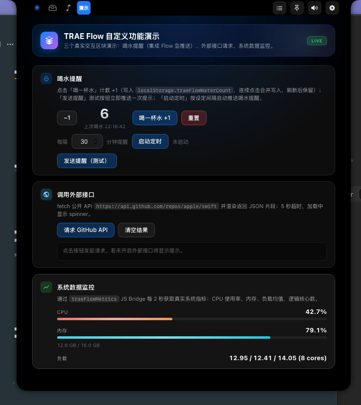
预期：展开态正常渲染交互模板；推送后紧凑态覆盖显示限时提示（默认 5000ms）；到期自动消失。
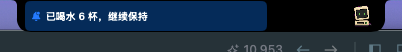
VC-06 新增本地 HTML 区域
- 「设置页面 > 左侧功能 > 添加自定义功能 > 类型选择 本地目录」
- 输入名称添加，可自定义图标。
- 点击功能行右侧「在 TRAE 中打开」菜单，选择已安装的 TRAE 变体。
- TRAE IDE被唤起并以新窗口打开该自定义区域的目录，可直接在 IDE 内编辑
index.html等文件。 - 修改保存文件后回到 Flow 岛观察渲染。
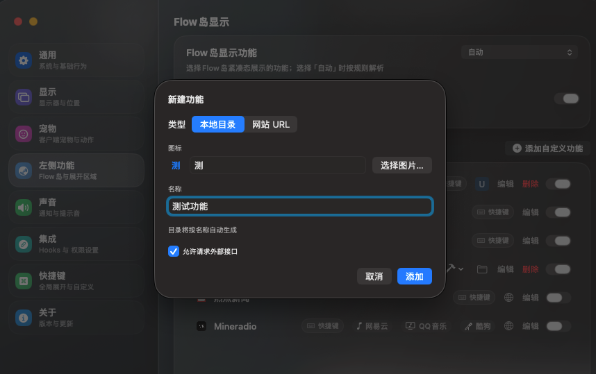
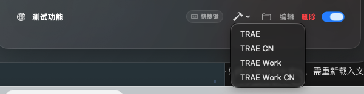
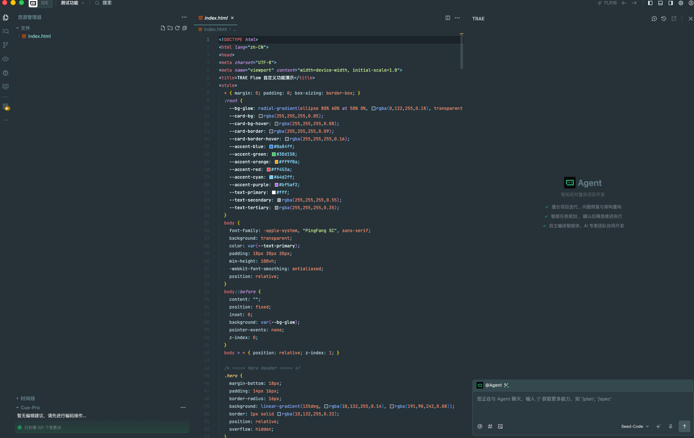
预期：新区域出现在切换栏并正常渲染；「在 TRAE 中打开」仅列出本机已安装的 TRAE 变体，选中后准确跳回对应 IDE 并定位到该目录；文件改动 FSEvents 自动刷新；沙箱外目录通过 Security-Scoped Bookmark 持久化。
VC-07 网页嵌入
- 「设置 > 左侧功能 > 添加自定义功能 > 类型选择 网站 URL」。
- 输入URL（支持本地运行的项目端口），等待自动抓取 favicon 与 title。
- 可选择开启「收起后保持后台运行」
预期：favicon / title 自动填充；网页正常加载交互；收起后离屏窗口保持运行，再次展开无需重载；
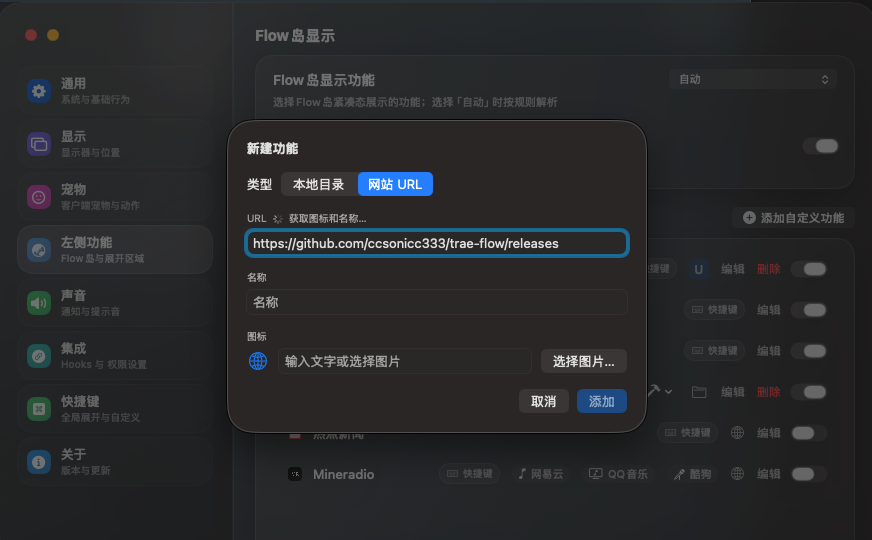
VC-08 NewsNow / Mineradio（可选）
「设置 > 左侧功能 > 启用对应功能」。
- NewsNow：启用后加载内置远程实例浏览新闻。
- Mineradio：启用后在「设置 > Mineradio」登录网易云 / QQ / 酷狗，播放带歌词歌曲；紧凑态显示歌词，收起后通过离屏窗口保持播放。

VC-09 全局快捷键
- 「设置 > 快捷键」查看默认：Opt+J 打开活跃会话、Opt+L 打开会话列表、Opt+1～9 展开第 N 个功能。
- 为某功能录制自定义快捷键。
预期：全局生效；冲突时静默丢弃（first-wins）。
主线三：TRAE Work Design 宠物上岛
PC-01 内置宠物切换
- 「设置 > 宠物」切换主题：TRAE FLOW / 月薪喵 / 光环小猫 / Frieren / Shinchan / TaoTao。
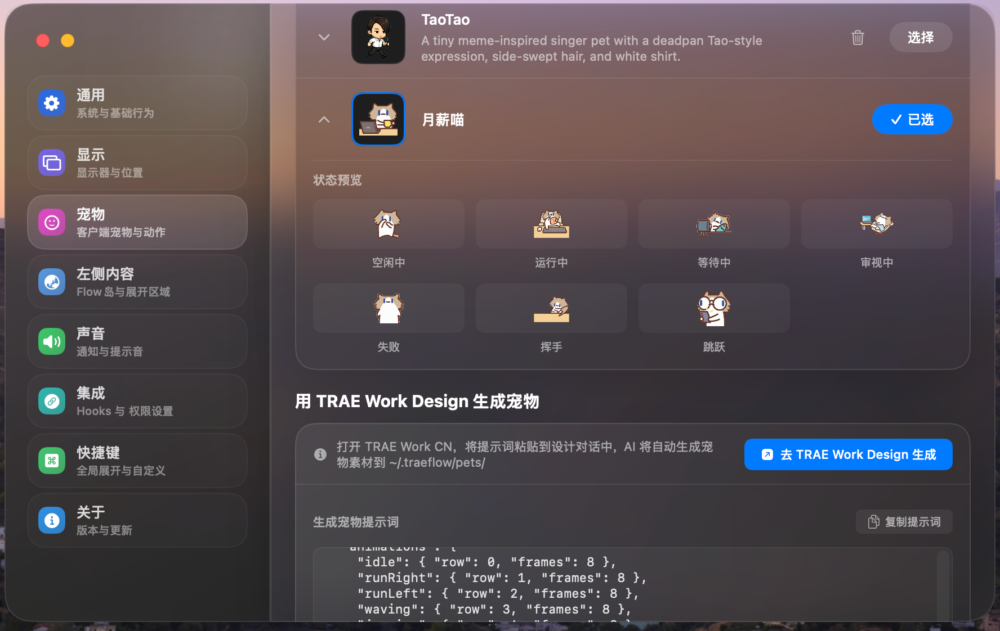
预期：宠物表动画切换；立即应用到 Flow 岛宠物。
PC-02 拖拽 Detach 与滚轮缩放
- 按住宠物拖拽到桌面。
- 滚轮缩放。
- 拖回 Flow 岛。
预期：以独立浮窗显示；滚轮可缩放大小；拖回flow岛恢复。

PC-03 自定义宠物包
- 「设置 > 宠物」参考 TRAE Work Design 工作流生成素材。
- 生成完成后自动显示到宠物列表。
预期：自动扫描出现；切换后按自定义宠物表播放；
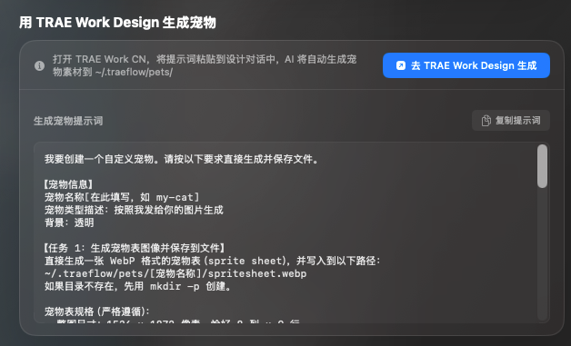
PC-04 内置宠物删除与恢复
- 删除某个内置主题。
- 点击「恢复内置宠物」。
预期：删除后从列表消失且重启不再出现；恢复按钮让所有已删除内置主题重新出现。
PC-05 宠物随任务状态切换
- 启用 TRAE Hook 并切换宠物主题。
- 在 IDE 中触发会话 / 工具调用 / 审批 / 完成。
预期：不同任务阶段宠物动画状态切换；与右侧任务计数同步。
常见问题
| 现象 | 解决 |
|---|---|
| Flow 岛不显示 | 检查是否有启用菜单栏隐藏相关软件；设置中重新选择显示器 |
| Hook 不生效 | 设置 > Hooks 勾选；完全退出重启 TRAE 变体 |
| 跳回 IDE 无效 | 系统设置 > 隐私与安全性 > 自动化，授权 TRAE FLOW 控制对应 IDE |
| 音乐不显示 | 启动播放器；检查 macOS 媒体权限 |
| Mineradio 无法播放 | 设置 > Mineradio 重新登录 |
| 自定义区域不刷新 | 重新添加目录重建 Security-Scoped Bookmark |
| Gatekeeper 拦截 | xattr -d com.apple.quarantine /Applications/TRAE\ FLOW.app |